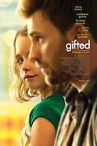

Date of Release : April 7, 2017
Cast :
- Chris Evans as Frank Adler
- Mckenna Grace as Mary Adler
- Lindsay Duncan as Evelyn Adler
- Jenny Slate as Bonnie Stevenson
- Octavia Spencer as Roberta Taylor
- Glenn Plummer as Greg Cullen
Description :
Gifted is a 2017 American comedy-drama film directed by Marc Webb and written by Tom Flynn.
It stars Chris Evans, Mckenna Grace, Lindsay Duncan, Jenny Slate and Octavia Spencer.
The plot follows an intellectually gifted 7-year-old who gets caught up in a custody battle between her uncle and grandmother.
The film was released on April 7, 2017, by Fox Searchlight Pictures and has grossed $29 million worldwide.